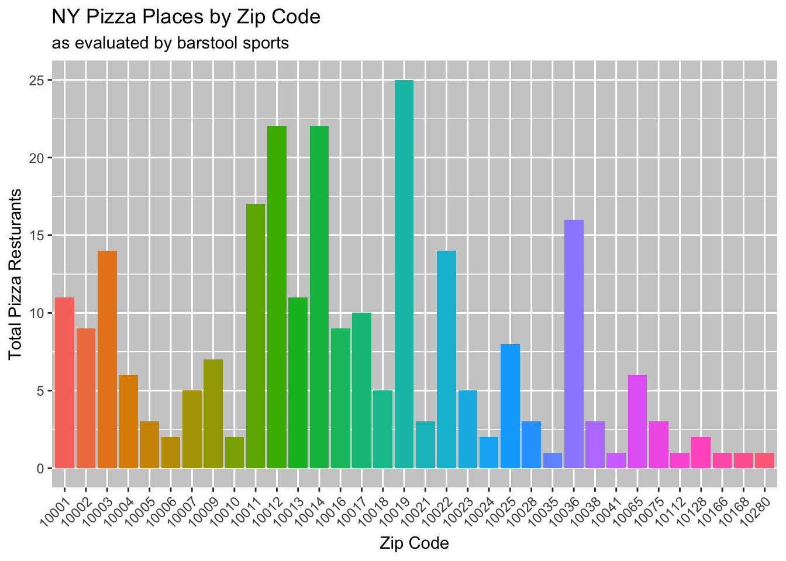
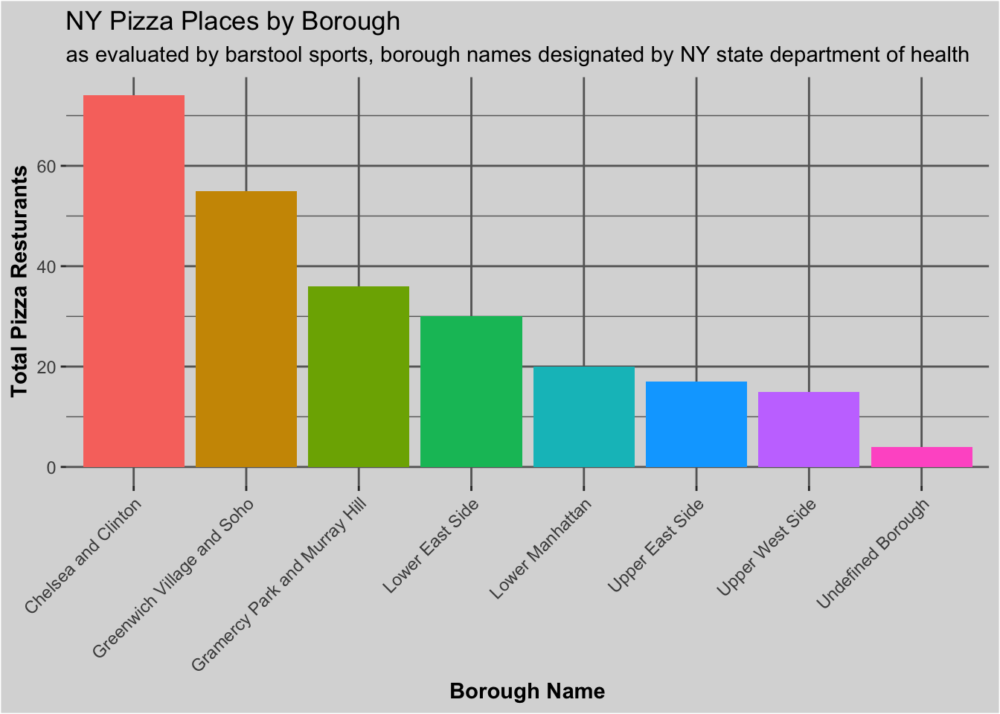
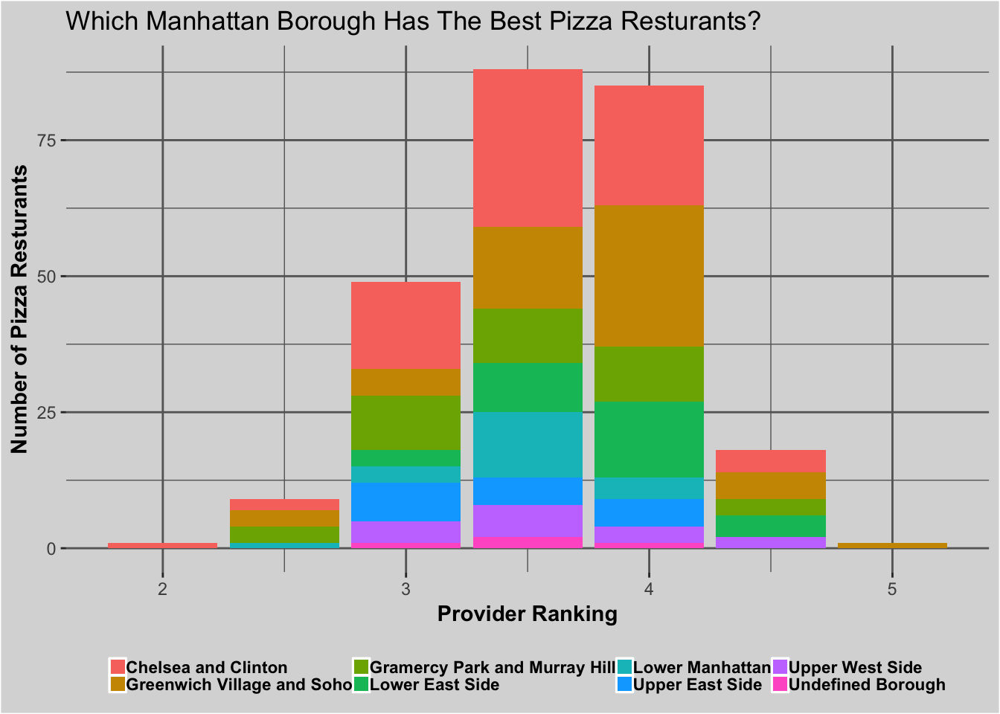
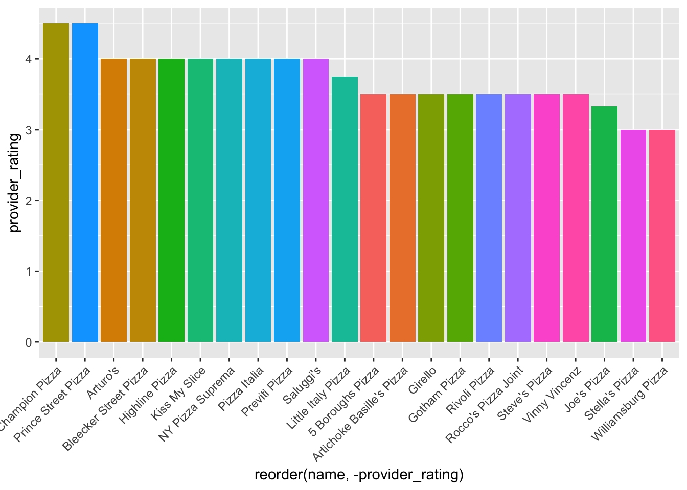
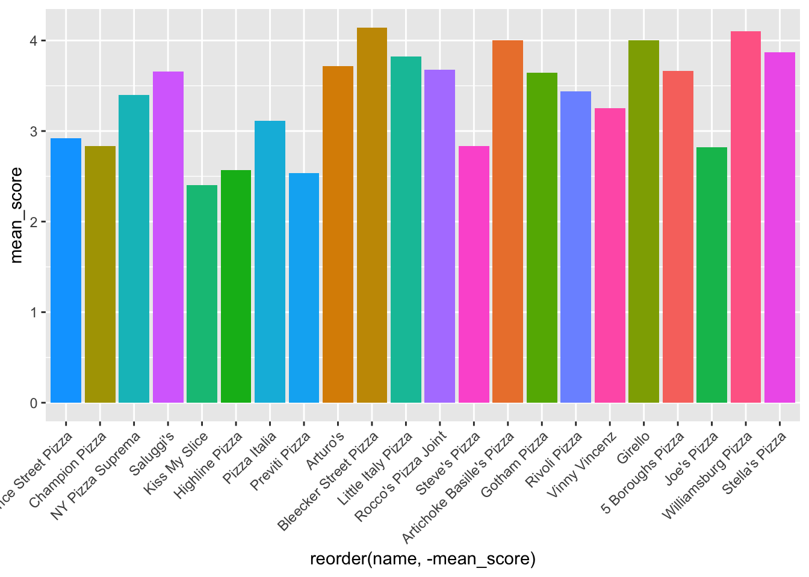
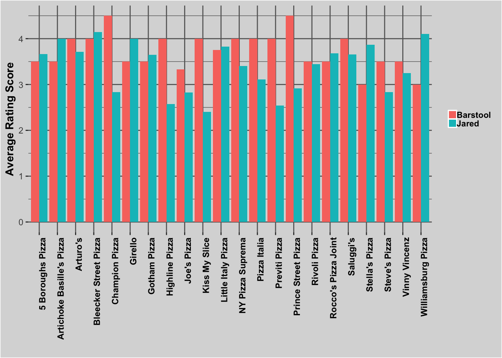
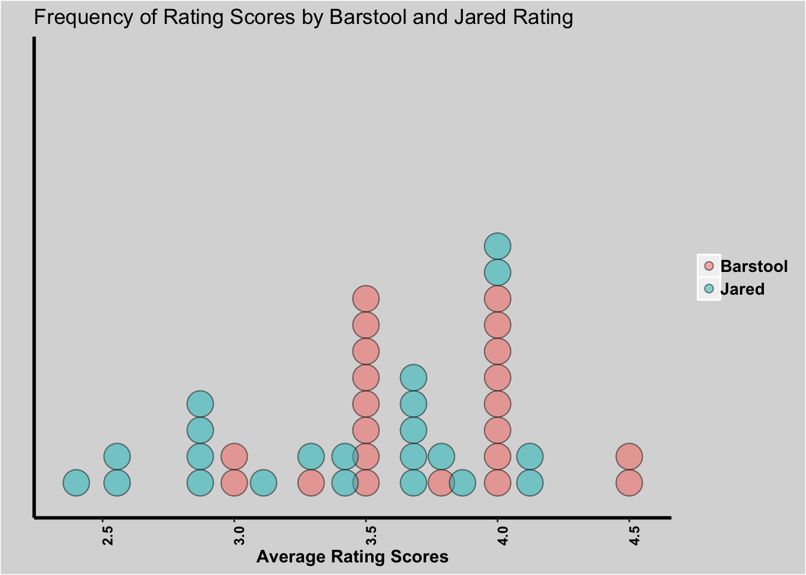
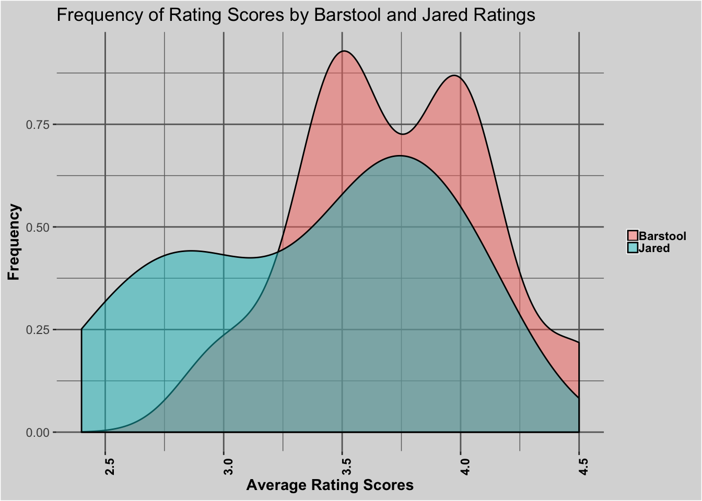

For this exercise we will be cleaning and wrangling the TidyTuesday data titled “Pizza Party.” These data contain three distinct data sets: pizza_barstool, pizza_jared and pizza_datafiniti. Pizza_jared and barstol contain demographic and rating data on the resturants within the study whereas, pizza_datafiniti is a larger data set of purely demographic/location data.
The data and TidyTuesday information can be found here. Information about the TidyTuesday program can be found here.
For our exercise we will focus on the barstool and jared data sets since they contain rating data which seems to be some of the more interesting data in the sets. Addtiionally, we will focus largely on the city = Manhatan subgroup of the data set to investigate the pizza resturant deomgraphics and ratings of this division of New York City.
Load all required packages.
library(tidyverse)
library(readr)
library(knitr)
library(ggthemes)
library(dplyr)
library(forcats)Looking at the data, the pizza_jared and pizza_barstool looks interesting by the demographics and the fact that some resturants overlap in the set. We will focus on these two data sets for our wrangling.
pizza_jared <- readr::read_csv("https://raw.githubusercontent.com/rfordatascience/tidytuesday/master/data/2019/2019-10-01/pizza_jared.csv")## Parsed with column specification:
## cols(
## polla_qid = col_double(),
## answer = col_character(),
## votes = col_double(),
## pollq_id = col_double(),
## question = col_character(),
## place = col_character(),
## time = col_double(),
## total_votes = col_double(),
## percent = col_double()
## )pizza_barstool <- readr::read_csv("https://raw.githubusercontent.com/rfordatascience/tidytuesday/master/data/2019/2019-10-01/pizza_barstool.csv")## Parsed with column specification:
## cols(
## .default = col_double(),
## name = col_character(),
## address1 = col_character(),
## city = col_character(),
## country = col_character()
## )## See spec(...) for full column specifications.Lets start with the barstool data set.
glimpse(pizza_barstool)## Observations: 463
## Variables: 22
## $ name <chr> "Pugsley's Pizza", "William…
## $ address1 <chr> "590 E 191st St", "265 Unio…
## $ city <chr> "Bronx", "Brooklyn", "New Y…
## $ zip <dbl> 10458, 11211, 10017, 10036,…
## $ country <chr> "US", "US", "US", "US", "US…
## $ latitude <dbl> 40.85877, 40.70808, 40.7537…
## $ longitude <dbl> -73.88484, -73.95090, -73.9…
## $ price_level <dbl> 1, 1, 1, 2, 2, 1, 1, 1, 2, …
## $ provider_rating <dbl> 4.5, 3.0, 4.0, 4.0, 3.0, 3.…
## $ provider_review_count <dbl> 121, 281, 118, 1055, 143, 2…
## $ review_stats_all_average_score <dbl> 8.011111, 7.774074, 5.66666…
## $ review_stats_all_count <dbl> 27, 27, 9, 2, 1, 4, 5, 17, …
## $ review_stats_all_total_score <dbl> 216.3, 209.9, 51.0, 11.2, 7…
## $ review_stats_community_average_score <dbl> 7.992000, 7.742308, 5.76250…
## $ review_stats_community_count <dbl> 25, 26, 8, 0, 0, 3, 4, 16, …
## $ review_stats_community_total_score <dbl> 199.8, 201.3, 46.1, 0.0, 0.…
## $ review_stats_critic_average_score <dbl> 8.8, 0.0, 0.0, 4.3, 0.0, 0.…
## $ review_stats_critic_count <dbl> 1, 0, 0, 1, 0, 0, 0, 0, 0, …
## $ review_stats_critic_total_score <dbl> 8.8, 0.0, 0.0, 4.3, 0.0, 0.…
## $ review_stats_dave_average_score <dbl> 7.7, 8.6, 4.9, 6.9, 7.1, 3.…
## $ review_stats_dave_count <dbl> 1, 1, 1, 1, 1, 1, 1, 1, 1, …
## $ review_stats_dave_total_score <dbl> 7.7, 8.6, 4.9, 6.9, 7.1, 3.…The zip code information looks interesting so lets dig into that variable first.
unique(pizza_barstool$zip)## [1] 10458 11211 10017 10036 10003 10001 10025 26505 26501 11201 10035
## [12] 10461 10705 55117 55401 55439 55417 55413 55414 55102 7050 10023
## [23] 10012 7031 10065 10007 10019 10016 10021 24740 10002 46406 60453
## [34] 60611 60610 60707 60614 46204 52246 52241 40202 40217 40208 48104
## [45] 48124 43229 43201 40507 40508 40503 44515 44503 44471 25311 38305
## [56] 55404 24060 14220 30009 30342 30305 30326 30045 30318 30303 28204
## [67] 30901 73106 19147 7202 7446 7110 7014 7407 10302 7070 7073
## [78] 10305 7030 7302 10280 10006 10014 10004 10005 10041 10038 10013
## [89] 11231 10011 33767 33602 78751 78222 78205 78209 32904 32118 32250
## [100] 33181 33139 33401 33480 11224 11223 11230 11215 92101 92103 92109
## [111] 90266 90401 90404 89109 89102 89101 94133 12866 12831 11946 11968
## [122] 11554 11003 11414 11040 11415 11379 11238 11217 11206 11743 11222
## [133] 10009 2639 2601 2554 2564 2563 2359 1902 2151 2557 2539
## [144] 2128 2568 2113 2114 2108 2184 2116 2199 2368 2115 2347
## [155] 2301 1801 2072 2467 2132 2535 1748 6338 6511 6907 6902
## [166] 10550 10128 10028 10075 10024 10022 10018 10010 10112 10166 10168Way too many zips to deal with alone, lets simplify the dataset.
New York is known for its pizza, so we will focus on all the zip codes with a city observation of New York. It looks like all of the city = Ney York observations represent lacations in Manhattan. We will focus on Manhattan for our exercise. Then we take a look at all of the unique zip codes in the subset.
nypizzaplaces_barstool <- filter(pizza_barstool, city == "New York")
nypizzaplaces_barstool## # A tibble: 251 x 22
## name address1 city zip country latitude longitude price_level
## <chr> <chr> <chr> <dbl> <chr> <dbl> <dbl> <dbl>
## 1 99 C… 473 Lex… New … 10017 US 40.8 -74.0 1
## 2 Nino… 39 W 46… New … 10036 US 40.8 -74.0 2
## 3 La P… 31 E 20… New … 10003 US 40.7 -74.0 2
## 4 La G… 382 8th… New … 10001 US NA NA 1
## 5 Chee… 2640 Br… New … 10025 US 40.8 -74.0 1
## 6 Sal … 2671 Br… New … 10025 US 40.8 -74.0 1
## 7 MAMA… 2750 Br… New … 10025 US 40.8 -74.0 2
## 8 Bond… 221 W 4… New … 10036 US 40.8 -74.0 2
## 9 Pats… 2287 1s… New … 10035 US 40.8 -73.9 2
## 10 LA T… 101 W 6… New … 10023 US 40.8 -74.0 1
## # … with 241 more rows, and 14 more variables: provider_rating <dbl>,
## # provider_review_count <dbl>, review_stats_all_average_score <dbl>,
## # review_stats_all_count <dbl>, review_stats_all_total_score <dbl>,
## # review_stats_community_average_score <dbl>,
## # review_stats_community_count <dbl>,
## # review_stats_community_total_score <dbl>,
## # review_stats_critic_average_score <dbl>,
## # review_stats_critic_count <dbl>,
## # review_stats_critic_total_score <dbl>,
## # review_stats_dave_average_score <dbl>, review_stats_dave_count <dbl>,
## # review_stats_dave_total_score <dbl>unique(nypizzaplaces_barstool$zip)## [1] 10017 10036 10003 10001 10025 10035 10023 10012 10065 10007 10019
## [12] 10016 10021 10002 10280 10006 10014 10004 10005 10041 10038 10013
## [23] 10011 10009 10128 10028 10075 10024 10022 10018 10010 10112 10166
## [34] 10168That is more like it now we can probably visualize this group a little better.
We are going to need to use our zip codes as bar graph bins so convert them to a character vector in case numeric causes issues down the line.
nypizzaplaces_barstool$zip <- as.character(as.numeric(nypizzaplaces_barstool$zip))Now make a preliminary plot. We need to add some asthetics to ensure we can read the zip code labels.
nybarstooltest <- nypizzaplaces_barstool %>% ggplot() +
geom_bar(aes(x = zip, fill = zip), stat = "count", show.legend = FALSE)
nypizzabyzip <- nybarstooltest + theme(axis.text.x = element_text(angle = 45, hjust = 1), panel.background = element_rect("#CCCCCC")) + labs(title = "NY Pizza Places by Zip Code", subtitle = "as evaluated by barstool sports") + xlab("Zip Code") + ylab("Total Pizza Resturants")
nypizzabyzip
This is pretty interesting, but Zip Codes do not tell much outright to people who are not from NYC so lets try to reassign some codes to different area groups. Lets also try to condense the data even further there are still a bit too many bars here.
There is a handy list of Manhattan borough names by zip code found on the NY department of health website.
We can apply these names to form smaller subgroups of our data by zip code distrubution.
To start, mutate a new variable by recoding the existing zip variable. I think there is probably a more efficent way to do this, but this method worked for this scenario. Since zip has to be character class and non-continious this makes this task difficult but this option works.
nypizzabyborough <- nypizzaplaces_barstool %>% mutate(
borough_name = recode(zip,
"10001" = "Chelsea and Clinton",
"10011" = "Chelsea and Clinton",
"10018" = "Chelsea and Clinton",
"10019" = "Chelsea and Clinton",
"10036" = "Chelsea and Clinton",
"10002" = "Lower East Side",
"10003" = "Lower East Side",
"10009" = "Lower East Side",
"10004" = "Lower Manhattan",
"10005" = "Lower Manhattan",
"10006" = "Lower Manhattan",
"10007" = "Lower Manhattan",
"10038" = "Lower Manhattan",
"10280" = "Lower Manhattan",
"10010" = "Gramercy Park and Murray Hill",
"10016" = "Gramercy Park and Murray Hill",
"10017" = "Gramercy Park and Murray Hill",
"10022" = "Gramercy Park and Murray Hill",
"10012" = "Greenwich Village and Soho",
"10013" = "Greenwich Village and Soho",
"10014" = "Greenwich Village and Soho",
"10021" = "Upper East Side",
"10028" = "Upper East Side",
"10065" = "Upper East Side",
"10075" = "Upper East Side",
"10128" = "Upper East Side",
"10023" = "Upper West Side",
"10024" = "Upper West Side",
"10025" = "Upper West Side",
"10035" = "Undefined Borough",
"10168" = "Gramercy Park and Murray Hill",
"10166" = "Undefined Borough",
"10112" = "Undefined Borough",
"10041" = "Undefined Borough"))Now that we have our data divided into boroughs we can ask our first question.
Lets take a look at the new data to find out! Start by reordering by borough_name so resulting plot appears organized.
glimpse(nypizzabyborough)## Observations: 251
## Variables: 23
## $ name <chr> "99 Cent Fresh Pizza", "Nin…
## $ address1 <chr> "473 Lexington Ave", "39 W …
## $ city <chr> "New York", "New York", "Ne…
## $ zip <chr> "10017", "10036", "10003", …
## $ country <chr> "US", "US", "US", "US", "US…
## $ latitude <dbl> 40.75370, 40.75690, 40.7390…
## $ longitude <dbl> -73.97411, -73.98052, -73.9…
## $ price_level <dbl> 1, 2, 2, 1, 1, 1, 2, 2, 2, …
## $ provider_rating <dbl> 4.0, 4.0, 3.0, 3.5, 3.0, 4.…
## $ provider_review_count <dbl> 118, 1055, 143, 28, 95, 324…
## $ review_stats_all_average_score <dbl> 5.666667, 5.600000, 7.10000…
## $ review_stats_all_count <dbl> 9, 2, 1, 4, 5, 17, 14, 6, 3…
## $ review_stats_all_total_score <dbl> 51.0, 11.2, 7.1, 16.3, 30.6…
## $ review_stats_community_average_score <dbl> 5.762500, 0.000000, 0.00000…
## $ review_stats_community_count <dbl> 8, 0, 0, 3, 4, 16, 13, 4, 3…
## $ review_stats_community_total_score <dbl> 46.1, 0.0, 0.0, 13.1, 24.5,…
## $ review_stats_critic_average_score <dbl> 0.0, 4.3, 0.0, 0.0, 0.0, 0.…
## $ review_stats_critic_count <dbl> 0, 1, 0, 0, 0, 0, 0, 1, 0, …
## $ review_stats_critic_total_score <dbl> 0.0, 4.3, 0.0, 0.0, 0.0, 0.…
## $ review_stats_dave_average_score <dbl> 4.9, 6.9, 7.1, 3.2, 6.1, 7.…
## $ review_stats_dave_count <dbl> 1, 1, 1, 1, 1, 1, 1, 1, 1, …
## $ review_stats_dave_total_score <dbl> 4.9, 6.9, 7.1, 3.2, 6.1, 7.…
## $ borough_name <chr> "Gramercy Park and Murray H…nypizzabyborough$borough_name <- fct_infreq(nypizzabyborough$borough_name)Now we plot by borough!
nypizzaboroughplot <- nypizzabyborough %>% ggplot() +
geom_bar(aes(x = borough_name, fill = borough_name), stat = "count", show.legend = FALSE)
boroughplot_1 <- nypizzaboroughplot + theme(axis.text.x = element_text(angle = 45, hjust = 1), panel.background = element_rect("grey85"), plot.background = element_rect(fill = "grey85"), panel.grid.minor = element_line(color = "grey40"), panel.grid.major = element_line(color = "grey40"), axis.title = element_text(face = "bold")) + labs(title = "NY Pizza Places by Borough", subtitle = "as evaluated by barstool sports, borough names designated by NY state department of health") + xlab("Borough Name") + ylab("Total Pizza Resturants")
boroughplot_1
The resulting plot shows a nice spread of pizza resturants by borough name. Chelsea and Clinton has the greatest concentration of pizza resturants within the zip code range (at least those measured in this study) so these data suggest that would be a good borough to look for some pizza!
Pizza resturant numbers are interesting, but realistically people are usually more concerned about finding the best pizza. This leads us to our second question for the data.
We can compare our borough subgroups by placing them into a stacked bar chart by the provider_rating score in the dataset.
nypizzabyborough %>% ggplot() +
geom_bar(aes(x = provider_rating, fill = borough_name)) +
theme(legend.position = "bottom", axis.title = element_text(face = "bold"), panel.grid.major = element_line(color = "grey40"), panel.grid.minor = element_line(color = "grey40"), legend.text = element_text(size = 8.5, face = "bold"), legend.key.size = unit(0.3, "cm"), legend.background = element_rect(fill = "grey85"), legend.title = element_blank(), panel.background = element_rect(fill = "grey85"), plot.background = element_rect(fill = "grey85")) +
xlab("Provider Ranking") +
ylab("Number of Pizza Resturants") + ggtitle("Which Manhattan Borough Has The Best Pizza Resturants?")
Based on provider ratings, we can see that pizza resturant quality is reasonably distrubuted across the Manhattan Boroughs. Though Chelsea and Clintin held the highest total number of pizza resturants, it appears that the Greenwich Village and Soho has a greater number of highly ranked pizza resturants.
Next, lets see how the barstool and jared ratings stack up to one another when compared. In the TidyTuesday ReadMe it was mentioned that the barstool and jared datasets have 22 pizza resturants which overlap. This leads to our third question.
To address this question, we will first need to reformat our data from both data sets so they can be combined to produce visuals.
First of all, pizza_jared has lots of zero values because of the method data was recorded via the likert scale. Lets remove any values that have zero votes so they are not counted as part of the data sets downstream.
corrected_jared <- subset(pizza_jared, votes > 0)Next we need to be able to compare the data sets. We can recode the likert scale in jared_rating to the same numeric scale used in provider_ratings for the barstool data so we can compare them. Then we merge by names to get a new data set to work with.
glimpse(pizza_jared)## Observations: 375
## Variables: 9
## $ polla_qid <dbl> 2, 2, 2, 2, 2, 3, 3, 3, 3, 3, 4, 4, 4, 4, 4, 5, 5, 5…
## $ answer <chr> "Excellent", "Good", "Average", "Poor", "Never Again…
## $ votes <dbl> 0, 6, 4, 1, 2, 1, 1, 3, 1, 1, 4, 2, 1, 1, 0, 1, 1, 0…
## $ pollq_id <dbl> 2, 2, 2, 2, 2, 3, 3, 3, 3, 3, 4, 4, 4, 4, 4, 5, 5, 5…
## $ question <chr> "How was Pizza Mercato?", "How was Pizza Mercato?", …
## $ place <chr> "Pizza Mercato", "Pizza Mercato", "Pizza Mercato", "…
## $ time <dbl> 1344361527, 1344361527, 1344361527, 1344361527, 1344…
## $ total_votes <dbl> 13, 13, 13, 13, 13, 7, 7, 7, 7, 7, 8, 8, 8, 8, 8, 5,…
## $ percent <dbl> 0.0000, 0.4615, 0.3077, 0.0769, 0.1538, 0.1429, 0.14…mutatejared <- corrected_jared %>% mutate(name = place)
mutatejared_2 <- mutatejared %>% mutate(jared_rating = recode(answer,
"Never Again" = 0,
"Poor" = 1,
"Fair" = 2,
"Average" = 3,
"Good" = 4,
"Excellent" = 5))
jared_and_barstool_join <- merge(mutatejared_2, pizza_barstool, by = "name")
glimpse(jared_and_barstool_join)## Observations: 143
## Variables: 32
## $ name <chr> "5 Boroughs Pizza", "5 Boro…
## $ polla_qid <dbl> 57, 57, 39, 39, 39, 39, 34,…
## $ answer <chr> "Average", "Excellent", "Ex…
## $ votes <dbl> 2, 1, 4, 1, 4, 1, 1, 3, 2, …
## $ pollq_id <dbl> 57, 57, 39, 39, 39, 39, 34,…
## $ question <chr> "How was 5 Boroughs Pizza?"…
## $ place <chr> "5 Boroughs Pizza", "5 Boro…
## $ time <dbl> 1513264990, 1513264990, 145…
## $ total_votes <dbl> 3, 3, 10, 10, 10, 10, 7, 7,…
## $ percent <dbl> 0.6667, 0.3333, 0.4000, 0.1…
## $ jared_rating <dbl> 3, 5, 5, 1, 4, 3, 1, 4, 5, …
## $ address1 <chr> "386 Canal St", "386 Canal …
## $ city <chr> "New York", "New York", "Ne…
## $ zip <dbl> 10013, 10013, 10011, 10011,…
## $ country <chr> "US", "US", "US", "US", "US…
## $ latitude <dbl> 40.72129, 40.72129, 40.7440…
## $ longitude <dbl> -74.00497, -74.00497, -74.0…
## $ price_level <dbl> 1, 1, 2, 2, 2, 2, 2, 2, 2, …
## $ provider_rating <dbl> 3.5, 3.5, 3.5, 3.5, 3.5, 3.…
## $ provider_review_count <dbl> 25, 25, 1454, 1454, 1454, 1…
## $ review_stats_all_average_score <dbl> 4.325000, 4.325000, 7.87878…
## $ review_stats_all_count <dbl> 4, 4, 33, 33, 33, 33, 9, 9,…
## $ review_stats_all_total_score <dbl> 17.3, 17.3, 260.0, 260.0, 2…
## $ review_stats_community_average_score <dbl> 4.633333, 4.633333, 7.87812…
## $ review_stats_community_count <dbl> 3, 3, 32, 32, 32, 32, 7, 7,…
## $ review_stats_community_total_score <dbl> 13.9, 13.9, 252.1, 252.1, 2…
## $ review_stats_critic_average_score <dbl> 0.0, 0.0, 0.0, 0.0, 0.0, 0.…
## $ review_stats_critic_count <dbl> 0, 0, 0, 0, 0, 0, 1, 1, 1, …
## $ review_stats_critic_total_score <dbl> 0.0, 0.0, 0.0, 0.0, 0.0, 0.…
## $ review_stats_dave_average_score <dbl> 3.4, 3.4, 7.9, 7.9, 7.9, 7.…
## $ review_stats_dave_count <dbl> 1, 1, 1, 1, 1, 1, 1, 1, 1, …
## $ review_stats_dave_total_score <dbl> 3.4, 3.4, 7.9, 7.9, 7.9, 7.…It looks like that mutate worked to remove any zero vote values but, we will have trouble down the line the way this information is formatted in the data frame. The fact that multiple observations are recorded under one observation will skew the data towards rating scores that received fewer votes. Overall, we are looking for the mean score 0-5 for each of the resturants in the pizza_jared dataframe that overlap with the pizza_barstool dataframe. To do this we will create a new data frame from the cleaned data simply containing the resturant name, total votes, total score (out of 5), and the mean score.
We start by pulling out the total votes for each resturant using aggregate, then rename the new variables to something sensible.
total_votes <- aggregate(jared_and_barstool_join[, 4], list(jared_and_barstool_join$name), sum)
workingdf <- total_votes %>% rename(name = Group.1, total_votes = x)Next we pull out the total score from each resturant. We must first multiply by the number of votes, then sum the values based on the name of the pizza resturant.
add_total_score <- jared_and_barstool_join %>% mutate(total_score = jared_rating * votes)
agg_total_score <- aggregate(add_total_score[, 33], list(add_total_score$name), sum)
workingdf_2 <- agg_total_score %>% rename(name = Group.1, total_score = x)Lastly, we combine the total votes, total scores, and compute the mean value for score for each resturant in a new data frame.
workingdf_3 <- merge(workingdf, workingdf_2, by = "name")
corrected_jared_mean_score <- workingdf_3 %>% mutate(mean_score = total_score / total_votes)For simplicity sake, lets make a new data frame for the provider rating for pizza_barstool so we do not have to deal with a data frame that has 32 variables when we only need a couple. There are some replicate observations of some resturants so we will aggregate provider_rating to get an average score.
barstool_short <- data.frame("name" = jared_and_barstool_join$name,
"provider_rating" = jared_and_barstool_join$provider_rating)
barstool_collapse <- barstool_short %>% distinct(name, provider_rating)
barstool_collapse_mean <- aggregate(barstool_collapse[, 2], list(barstool_collapse$name), mean)
corrected_barstool_mean_score <- barstool_collapse_mean %>% rename(name = Group.1, provider_rating = x)Now we can take a look at the graphs of the rating scores from pizza_jared and pizza_barstool.
ggplot(corrected_barstool_mean_score, aes(x = reorder(name, -provider_rating), y = provider_rating, fill = name)) + stat_summary(fun.y="mean", geom="bar", show.legend = FALSE) + theme(axis.text.x = element_text(angle = 45, hjust = 1))
ggplot(corrected_jared_mean_score, aes(x = reorder(name, -mean_score), y = mean_score, fill = name)) + stat_summary(fun.y="mean", geom="bar", show.legend = FALSE) + theme(axis.text.x = element_text(angle = 45, hjust = 1)) + scale_x_discrete(limits = c("Prince Street Pizza", "Champion Pizza", "NY Pizza Suprema", "Saluggi's", "Kiss My Slice", "Highline Pizza", "Pizza Italia", "Previti Pizza", "Arturo's", "Bleecker Street Pizza", "Little Italy Pizza", "Rocco's Pizza Joint", "Steve's Pizza", "Artichoke Basille's Pizza", "Gotham Pizza", "Rivoli Pizza", "Vinny Vincenz", "Girello", "5 Boroughs Pizza", "Joe's Pizza", "Williamsburg Pizza", "Stella's Pizza"))
This is moderately informative, but it would be best if we could get the bars side by side so it is not difficult to read and the colors match.To do this we need all of our data in one dataframe.
Start by adding a source variable to each of our data frames so we can reference where they came from. Then we need to standardize our rating variable so we can merge the two data frames.
barstool_source <- corrected_barstool_mean_score %>% mutate(source = "Barstool") %>% mutate(rating_score = provider_rating)
jared_source <- corrected_jared_mean_score %>% mutate(source = "Jared") %>% mutate(rating_score = mean_score)Now that we have like variables we merge by rating score so we can compare the two, keeping the all = TRUE so we do not abandon any values that happen to be the same numerically. The variables we needed did not merge as successfully as expected (I am still unsure as to why) but we did succeed in combining the data frame. From here, we can correct our mismatched variables by creating new ones and coalescing. As a result there will be some vestigial variable as a result. NAs will be generated as variables from each individual data set will not directly translate over, but for this plot those will not serve as the data source.
final_plot <- merge(barstool_source, jared_source, by = "rating_score", "name", all = TRUE)## Warning in `[<-.factor`(`*tmp*`, ri, value = c(3.66666666666667, 4,
## 3.71428571428571, : invalid factor level, NA generatedfinal_plot$name <- as.factor(as.character(final_plot$name))
final_plot$name.y <- as.factor(as.character(final_plot$name.y))
name_fix_final <- final_plot %>% mutate(resturant_name = coalesce(name, name.y)) %>% mutate(source_proper = coalesce(source.x, source.y)) %>% mutate(rating_score_proper = coalesce(rating_score, mean_score))Now we make the plot!
name_fix_final %>% ggplot() +
geom_bar(aes(x = resturant_name, y = rating_score_proper, fill = source_proper ), stat = "identity", position = "dodge") +
theme(axis.text.x = element_text(angle = 90, hjust = 1, face = "bold", color = "black"), legend.position = "right", axis.title = element_text(face = "bold"), panel.grid.major = element_line(color = "grey40"), panel.grid.minor = element_line(color = "grey40"), legend.text = element_text(size = 8.5, face = "bold"), legend.key.size = unit(0.3, "cm"), legend.background = element_rect(fill = "grey85"), legend.title = element_blank(), panel.background = element_rect(fill = "grey85"), plot.background = element_rect(fill = "grey85")) + ylab("Average Rating Score") + xlab("")
With this plot we can compare and contrast the individual ratings for each pizza resturant with both the average score from barstool and jared data. Scores look pretty consistent across the board however, there are a few resturants which barstool scores a decent bit higher for (Prince Street Pizza, Previti Pizza, and Champion Pizza) and one where jared scored higher (Williamsburg Pizza).
It is still a little difficult to visualize the overall trends of the data with this plot, so we will try some alternate forms.
First, we start with a dotplot.
name_fix_final %>% ggplot() + geom_dotplot(aes(x = rating_score_proper, fill = source_proper), alpha = 0.5, binwidth = 0.1, stackgroups = TRUE, binpositions = "all") + theme(axis.text.x = element_text(angle = 90, hjust = 1, face = "bold", color = "black"), legend.position = "right", axis.title = element_text(face = "bold"), panel.grid.major = element_line(color = "grey85"), panel.grid.minor = element_line(color = "grey85"), legend.text = element_text(size = 10.5, face = "bold"), legend.key.size = unit(0.5, "cm"), legend.background = element_rect(fill = "grey85"), legend.title = element_blank(), panel.background = element_rect(fill = "grey85"), plot.background = element_rect(fill = "grey85"), axis.text.y = element_blank(), axis.ticks.y = element_blank(), axis.line = element_line( size = 1, linetype = "solid")) + xlab("Average Rating Scores") + ylab("") +ggtitle("Frequency of Rating Scores by Barstool and Jared Rating")
The dotplot of the combined data shows the individual average data points very nicely. It appears that barstool seems to assign higher ratings more frequently than jared does based on the distribution of dots in this plot.
Now lets try a density plot.
name_fix_final %>% ggplot() + geom_density(aes(x = rating_score_proper, fill = source_proper), alpha = 0.5) + theme(axis.text.x = element_text(angle = 90, hjust = 1, face = "bold", color = "black"), legend.position = "right", axis.title = element_text(face = "bold"), panel.grid.major = element_line(color = "grey40"), panel.grid.minor = element_line(color = "grey40"), legend.text = element_text(size = 8.5, face = "bold"), legend.key.size = unit(0.3, "cm"), legend.background = element_rect(fill = "grey85"), legend.title = element_blank(), panel.background = element_rect(fill = "grey85"), plot.background = element_rect(fill = "grey85")) + xlab("Average Rating Scores") + ylab("Frequency") + ggtitle("Frequency of Rating Scores by Barstool and Jared Ratings")
Here we see the distrubtion of the average scores assigned by both raters. As suggested by the dot plot it appears that barstool does indeed assign higher ratings more frequently. Both data sets assign scores between 3.25 and 4.2 most frequently, however jared rating assigns lower score values (3 or below) more frequently than barstool does. Both raters assign above 4.25 very infrequently.